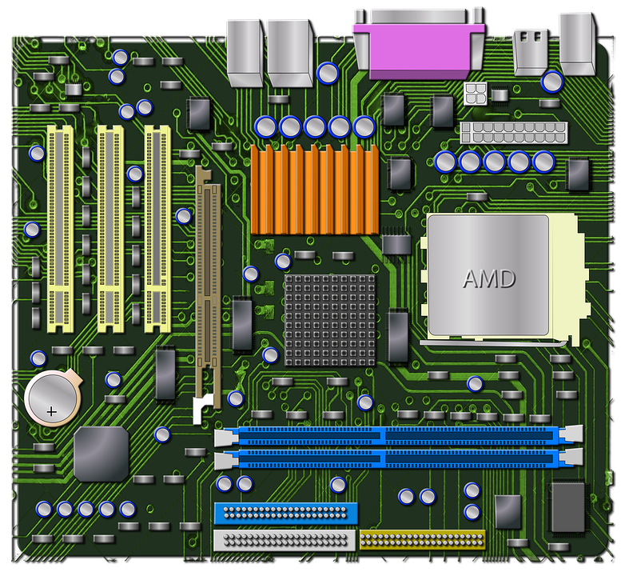
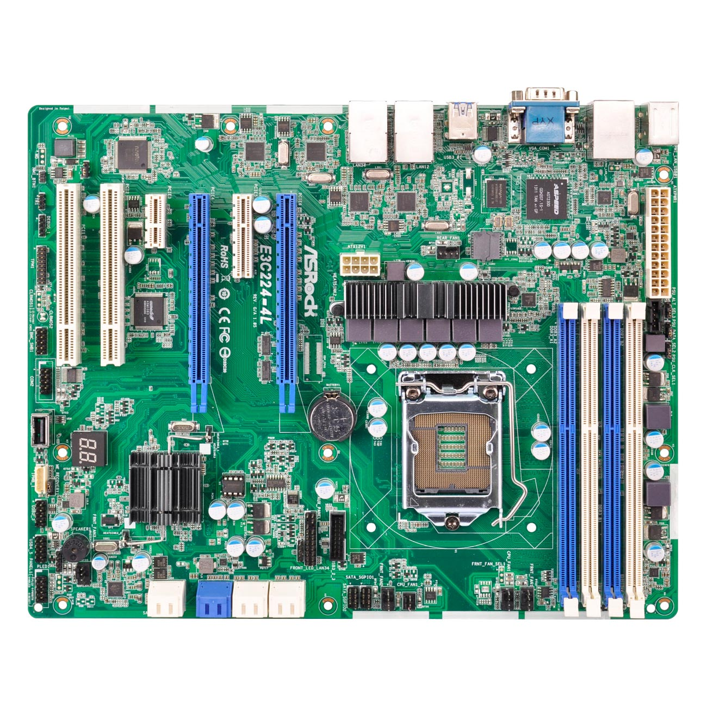
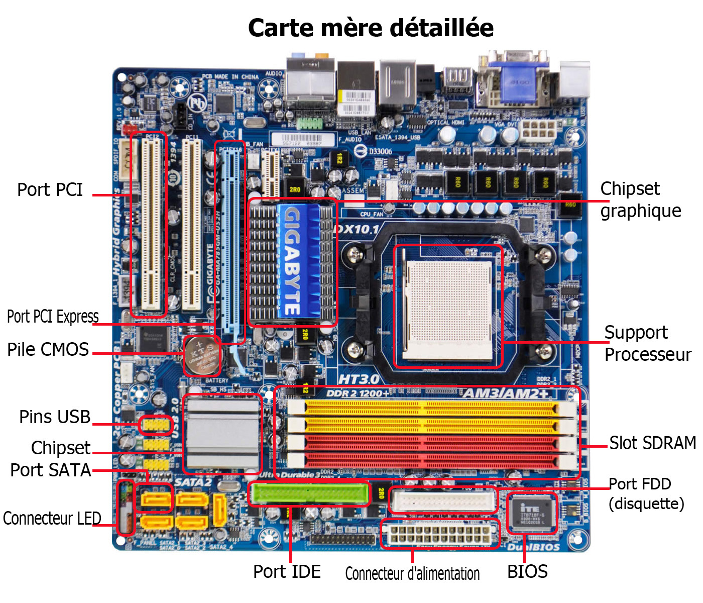
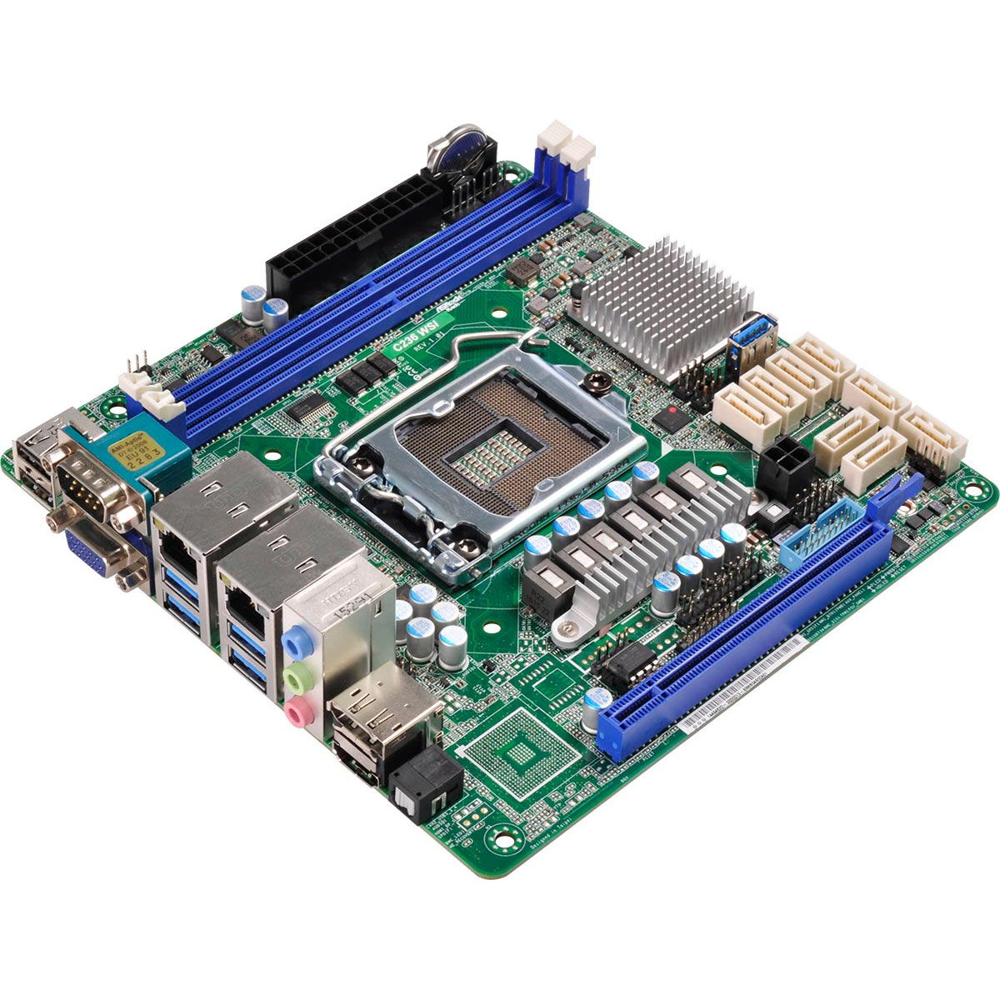

LA CARTE MÈRE :
   I) Qu'est-ce que c'est ?
La carte mère est le circuit imprimé central, qui relie tous les composants, périphériques et cartes optionnelles. Elle sert à centraliser les informations fournies par les constituants et les mettre en relation. Les deux grands types de cartes mères sont ATX standard (305x244mm) et BTX standard (325x267mm).
II) Comment ça marche ?
Les composants sont reliés et interagissent via des fils électriques présents sur la carte mère. La carte mère est en quelque sorte le corps de l'ordinateur, avec un réseau de nerds permettant la transmission d'informations.
III) Quelles différences font la qualité ?
Une carte mère de milieu de gamme aura un prix inférieur à 100€ et sera légère, mais moins performante et moins bien équipée (par exemple moins de ports pour les périphériques) avec des capacités limitées. Elles sont donc parfaitement adaptées pour des ordinateurs dédiés par exemple à de la bureautique. Le haut de gamme des cartes mères est pour un budget entre 100€ et 150€, elles seront un peu plus lourdes mais beaucoup plus performantes et beaucoups mieux équipées, plus adaptées pour un PC gamer par exemple.
IV) Qui les fabrique ?
Les principaux fabricants de cartes mères sont ASRock, Asus, Dell, EVGA, Aorus, Gigabyte, Intel et MSI.
| ❮ ALIMENTATION | MICROPROCESSEUR ❯ |